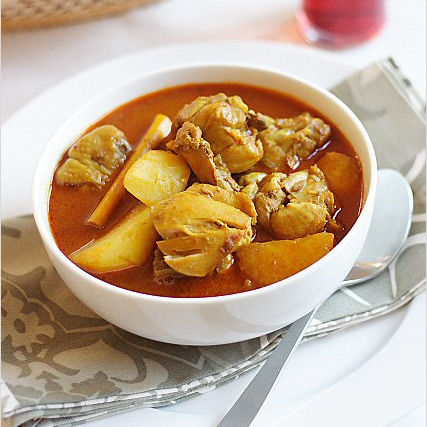

Curry Chicken
- 800g chicken
- 1/2-1 coconut milk
- 180g curry paste
- 3 large potato
- 3 large onion
- 3 stalks curry leaves
- Saute curry paste in hot oil until fragrant. Add in chicken.
Continue to saute untilchicken release oil.
- Second, add in water, tamarind paste, curry leaves, potato, onion, sugar and salt.
Let chicken simmer in slow fire untill potatoes becomes soft and chicken is cooked throughly.
- Add in coconut milk and cook until oil starts to seperate.
Remove and serve.
